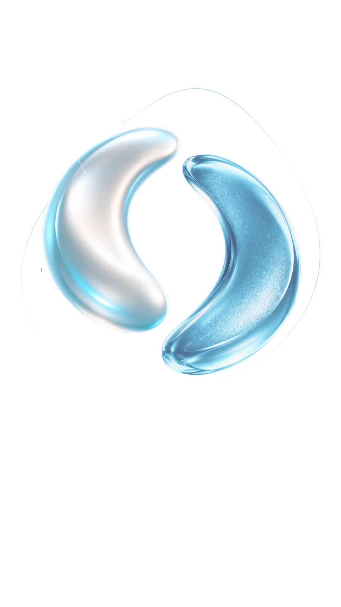

ETAPA 1 - MOMENTO
Seus ciclos começaram a mudar. Nos últimos meses, ela percebeu irregularidade menstrual, episódios de calor e alterações no sono.
Renata ainda menstrua e não deseja engravidar.
ETAPA 1 - MOMENTO
Seus ciclos começaram a mudar. Nos últimos meses, ela percebeu irregularidade menstrual, episódios de calor e alterações no sono.
Renata ainda menstrua e não deseja engravidar.
A perimenopausa antecede a menopausa. Nessa fase, os ciclos podem se tornar irregulares e sintomas como ondas de calor e alterações do sono podem começar a aparecer.
Baldwin MK, Jensen JT. Contraception during the perimenopause. Maturitas. 2013;76(3):235-242.
Toque para seguir.
ETAPA 2 - CONHECIMENTO
Teste seus conhecimentos
sobre contracepção hormonal
na mulher 40+.
ETAPA 2 - CONHECIMENTO
PERGUNTA 01
Ciclos irregulares
significam que a mulher
não pode mais engravidar.
ETAPA 2 - CONHECIMENTO
RESPOSTA 01
A perimenopausa é uma fase de
transição que antecede a
menopausa. Nela, os ciclos podem
se tornar irregulares, mas a vida
reprodutiva não se encerra
imediatamente.
[X]% dos participantes responderam corretamente.
O'Connor KA, Ferrell R, Brindle E, et al. Progesterone and ovulation across stages of the transition to menopause. Menopause. 2009 Nov-Dec;16(6):1178-1187.
ETAPA 2 - CONHECIMENTO
RESPOSTA 02
Durante a perimenopausa, a ovulação se
torna menos prevalente e a duração do
ciclo menstrual aumenta. No entanto, 25%
dos ciclos com intervalos longos de 50-60
dias podem ser ovulatórios.
Assim, mesmo com ovulação intermitente,
e com redução na taxa de fertilidade, a
mulher necessita de contracepção eficaz,
pois a ocorrência de gestação não
planejada na perimenopausa é alta.
[X]% dos participantes responderam corretamente.
Baldwin MK, Jensen JT. Contraception during the perimenopause. Maturitas.
2013;76(3):235-242.
Long ME, Faubion SS, MacLaughlin KL, Pruthi S, Casey
PM. Contraception and hormonal management in the perimenopause. J Womens Health
(Larchmt). 2015;24(1):3-
10.
ETAPA 2 - CONHECIMENTO
Você acertou [X] de 6 perguntas.
[X]% dos participantes tiveram um número de acertos igual ao seu.

ETAPA 3 - A DECISÃO
Arraste para unir
os elementos.
Minibula
NEXTELA®
Comprimidos revestidos de estetrol monoidratado 15 mg + drospirenona 3 mg em embalagem com 24 rosas (ativo) e 4 brancos (placebo).
USO ORAL E ADULTO
Indicações: Anticoncepção oral. Contraindicações: Presença ou risco de tromboembolismo venoso: Tromboembolismo venoso atual (com anticoagulantes) ou histórico (por ex., trombose venosa profunda ou embolia pulmonar). Conhecida predisposição hereditária ou adquirida para tromboembolismo venoso, como resistência à ação da proteína C ativada (rPCA), causada por mutação no fator V (Fator V de Leiden), deficiência de antitrombina III, deficiência de proteína C ou deficiência de proteína S. Cirurgia de grande porte com imobilização prolongada. Alto risco de tromboembolismo venoso devido à presença de múltiplos fatores de risco. Presença ou risco de tromboembolismo arterial: Tromboembolismo arterial atual, histórico ou condição prodrômica. Doença cerebrovascular: acidente vascular cerebral atual, histórico ou condição prodrômica. Conhecida predisposição hereditária ou adquirida para tromboembolismo arterial, como hiper-homocisteinemia e anticorpos antifosfolípides. Histórico de enxaqueca com sintomas neurológicos focais. Alto risco de tromboembolismo arterial devido a múltiplos fatores de risco ou presença de um fator de risco grave, tais como: diabetes mellitus com sintomas vasculares, hipertensão grave, dislipoproteinemia grave. Presença ou histórico de doença hepática grave na qual os valores da função hepática não retornaram ao normal. Insuficiência renal grave ou insuficiência renal aguda. Presença ou histórico de tumores hepáticos (benignos ou malignos). Malignidades influenciadas por esteroides sexuais conhecidas ou suspeitas. Sangramento vaginal não diagnosticado. Hipersensibilidade às substâncias ativas ou a qualquer um dos excipientes. Não prescreva este medicamento para mulheres com histórico de tromboembolismo venoso associado à gravidez ou ao uso de estrogênios exógenos, ou mesmo de causa desconhecida, a menos que estejam usando anticoagulantes. Categoria de risco na gravidez: X. Este medicamento não deve ser utilizado por mulheres grávidas ou que possam ficar grávidas durante o tratamento. Uso contraindicado no aleitamento ou na doação de leite humano: Este medicamento é contraindicado durante o aleitamento ou doação de leite, pois é excretado no leite humano e pode causar reações indesejáveis no bebê. Seu médico ou cirurgião-dentista deve apresentar alternativas para o seu tratamento ou para a alimentação do bebê. Advertências e Precauções: O uso de qualquer COC aumenta o risco de TEV em comparação com o não uso. O risco de TEV é mais alto no primeiro ano de uso do COC. O risco de complicações tromboembólicas em usuárias de COC pode aumentar substancialmente em uma mulher com fatores de risco adicionais. Fumar aumenta o risco deste medicamento causar problemas no coração e vasos sanguíneos. Se desenvolver hipertensão clinicamente significativa durante o uso de um COC, é prudente que o médico suspenda a ingestão dos comprimidos e trate a hipertensão. Nas mulheres com angioedema hereditário, os estrógenos exógenos podem induzir ou exacerbar os sintomas do angioedema. Distúrbios da função hepática podem exigir a interrupção do uso de COC. Este medicamento pode causar hepatotoxicidade. Por isso, requer uso cuidadoso, sob vigilância médica estrita e acompanhado por controles periódicos da função hepática durante todo o tratamento.. Mulheres diabéticas devem ser cuidadosamente observadas. Piora da depressão endógena, da epilepsia, da doença de Crohn e da colite ulcerativa foram relatadas durante o uso de COC. Ocasionalmente, pode ocorrer cloasma. Podem ocorrer sangramentos imprevistos especialmente durante os primeiros meses de uso. Informe ao paciente que este medicamento não protege contra infecções sexualmente transmissíveis, recomendando o uso de preservativo sempre que for necessário. Atenção: Cada comprimido rosa deste medicamento contém 39,9 mg de lactose e cada comprimido branco contém 67,66 mg. Este medicamento não deve ser usado por pessoas com síndrome de má-absorção de glicose-galactose. Atenção: Contém lactose. Atenção: Contém os corantes dióxido de titânio e óxido de ferro vermelho que podem, eventualmente, causar reações alérgicas. Interações com medicamentos, alimentos e álcool: Podem ocorrer interações que podem resultar em aumento da depuração dos hormônios sexuais e que podem levar a ocorrência de sangramento irregular e/ou falha do anticoncepcional. Mulheres em tratamento com medicamentos indutores de enzimas devem utilizar um método de barreira ou outro método anticoncepcional. Substâncias que aumentam a depuração de COCs: barbitúricos, bosentana, carbamazepina, fenitoína, primidona, rifampicina e medicamentos para HIV como ritonavir, nevirapina e efavirenz e possivelmente também felbamato, griseofulvina, oxcarbazepina, topiramato e produtos contendo erva-de-são-joão (Hypericum perforatum). Inibidores fortes ou moderados da CYP3A4 pode aumentar as concentrações séricas da drospirenona. Pode afetar o metabolismo de ciclosporina, lamotrigina. Uso com medicamentos contendo ombitasvir/paritaprevir/ritonavir pode aumentar o risco de elevações da ALT. O uso de anticoncepcionais esteroidais pode influenciar os resultados de certos exames laboratoriais. A drospirenona causa aumento da atividade da renina e aldosterona plasmáticas. Posologia: um comprimido por dia durante 28 dias consecutivos. A próxima cartela é iniciada imediatamente após o término da anterior, sem interrupção. Reações Adversas e alterações de exames laboratoriais: Comuns: Distúrbios de humor, Distúrbios da libido, Cefaleia, Dor abdominal, Náusea, Acne, Mastalgia, Metrorragia, Hemorragia vaginal, Dismenorreia, Menorragia, Flutuação de peso, Lipídios anormais. Vide demais reações adversas na bula completa do produto.
CONTRAINDICAÇÃO: PRESENÇA OU HISTÓRICO DE TROMBOSE VENOSA
INTERAÇÕES MEDICAMENTOSAS: RIFAMPICINA
Registro: 1.0033.0220/Libbs Farmacêutica Ltda. Venda sob prescrição.
Material destinado a profissionais de saúde habilitados a dispensar e/ou prescrever medicamentos.
Este material é de uso exclusivo, sem autorização de postagem e/ou compartilhamento.